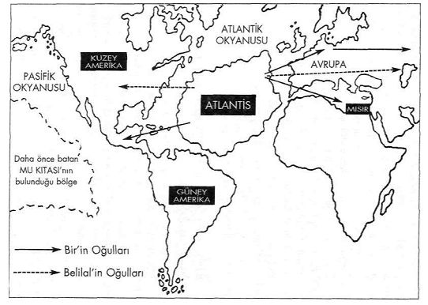

Tufan Öncesi'ne ait sırların üstü örtülüyor..
Kutsal Bilim'in Sırları Mabetler'e çekiliyor..
Karanlığın Oğullan Şambala'yı Kuruyor..
Mu Kıtası'nın sulara gömülmesinden bu yana binlerce yıl geçmişti... Mu'nun batışından sonra Mu Kültürü uzun bir süre Atlantis'te yaşatılmaya devam etti. Bu süre içinde dünyanın kalbi Atlantis'ti...
Mu'nun sırları, Atlantis'ten çevre kıtalara yapılan göçlerle taşındı... Bizim kıtalarımızdaki çeşitli yörelerde merkezler oluşturuldu. Bu merkezlerden en önemlilerinden biri Mısır'dı. Mısır tam anlamıyla Atlantisliler'ce kuşatıldı. Bölgeye çok önce gelen Mulular zaten burada uygun bir zeminin oluşmasını sağlamışlardı. Bu da Atlantisiler'in işini hayli kolaylaştırdı. Yıllar süren göçler Mısır'ı adeta küçük bir Atlantis'e çevirdi. Orjinali Atlantis'te olan ve sırların merkezi konumundaki "Yüce Piramit"in bir benzeri Mısır'da da inşa edilmiş." Ancak ortada çok önemli bir sorun vardı... Dünya'nın kapısını yeni bir doğal afetler zinciri daha çalmak üzereydi...
Elde edilen tüm bulgular bu seferki yıkımdan en çok zarar görecek bölgelerin başında Atlantis Kıtası'nın geleceğini gösteriyordu...
Fakat ortada bir başka sorun daha vardı...
Mu Kıtası'nın batışından sonra geçen süre içinde Atlantis'te "Osiris Öğretisi" adı altında yaşatılmaya devam eden Mu'dan gelen kozmik kökenli bu öğreti, ikiye ayrılmış durumdaydı. "Bir'in Oğullan" ve "Belial'in Oğullan" adı altında ikiye ayrılan Atlantisliler, kendi aralarında önce zıtlaşmayla başlayan ve sonrasında çatışmaya hatta kıta içinde büyük bir savaşa dönüşen bir kutuplaşmanın içinde bulunuyorlardı.
İnsan bedeninde nasıl ki enerji giriş ve çıkış noktalan varsa, Dünya'nın da buna benzer şakraları vardır. Atlantisliler Dünya'ya ait güç akımları başta olmak üzere, belirli kozmik güçlerin mahiyetini ve nasıl işlediğini biliyor ve bunları dikkatli bir şekilde yaşamlarının çeşitli alanlarında kullanabiliyorlardı.Çeşitli doğa olaylarına da bu güçler sayesinde müdahale edebiliyorlardı. Jeofizik afetlere karşı da bu güçlerden yararlanıyorlardı. Belirli yerlere diktikleri piramitler bu alanda da önemli bir fonksiyon görmekteydi. Ancak şimdi durum çok değişmişti. Her iki grubun da ellerinde bulunan kozmik kökenli bilgiler ve sırlar farklı amaçlarda kullanılmaya başlanmıştı. "Bir'in Oğulları" adı verilen grup Osiris Öğretisi'ne ilk günkü safiyetiyle bağlı kalmış, buna karşın "Belial'in Oğullan" ise bu bilgileri ve bu bilgilerden elde ettikleri psişik - majik güçlerini negatif alanlarda kullanmaya başlamışlardı. Böylelikle Dünya üzerinde ilk kez kara maji uygulamaları ortaya çıkmış oluyordu. Kozmik kökenli bilgilerden elde edilen psişik güçler ve buna bağlı olan majik uygulamaların negatif alanda kullanımı öncelikle dünyanın aurası üzerinde çok ağırlaştırıcı bir etkiye neden olmuştu. Kara maji uygulamalarından ortaya çıkan negatif yüklü enerjiler, Dünya'yı adeta "kara bir bulut" gibi her geçen gün biraz daha kaplıyordu. Bu, daha sonraki yüzyıllarda etkilerini bizim devremiz insanlığına da taşıyacak olan, çok önemli bir yol ayrımının başlangıcıydı. Psişik güçlerin negatif alanda kullanımı o denli ileri bir boyuta ulaşmıştı ki, bu tekniklerden yararlanılarak, yerkürenin tektonik güçleri bile faaliyete geçirilebilmekteydi. Ancak bütün bu yapılanların Yerküre'nin dengesini nedenli bozduğu hiç hesap edilmiyordu. Belirli periyotlarla Dünya üzerinde yaşanan kozmik kökenli bazı doğal afetlere, bir de bu etkenler ilave olmuştu. Kaçınılmaz son tüm gücüyle geliyorum diyordu...
Atlantis'deki Osiris Rahipleri yaklaşmakta olan felâkete karşı halkı uyarmak için her yolu deniyorlardı. Eski Mu Külütürü'ne sadık kalan Osiris Rahipleri kendi aralarında yaptıkları son toplantıda yaklaşmakta olan büyük yıkımı tüm ayrıntılarıyla ele almışlar ve yapılması gerekenleri birkaç ana başlıkta toplamışlardı:
1- Halihazırda "Osiris Öğretisi" adı altında varlığını sürdüren Mu Kültürü'nün gelecek kuşaklara her ne şekilde olursa olsun aktarılmasına olanak sağlanmalı ve dünya üzerinden tamamen kaybolmasına izin verilmemeli.
2- Daha önce Mu'nun Naakal rahiplerince oluşturulan gizli yeraltı merkezleriyle irtibata girilmeli ve bu merkezlerin yeni kurulacak merkezlerle irtibatlandırılması sağlanmalı.
3- Yaşanacak afetlerden kısmen daha az etkilenmesi beklenen çevre kıtalardan Amerika ve Afrika'nın Kuzey bölgelerindeki tespit edilen yörelere sürdürülmekte olan göçler yoğunlaşırılmalı ve mümkün olduğunca halkın büyük bir bölümünün buralara göç etmesi için her türlü imkân seferber edilmeli.
Ve bütün bunlar olabildiğince çabuk gerçekleştirilmeliydi. Çünkü yaklaşmakta olan felâketler zincirine fazla bir zaman kalmamıştı. Ancak kıtalarının batmayacağına inanan "Belial'in Oğulları" buna gerek olmadığını ileri sürüyorlardı. Beklenen doğal afetlerin kıtalarını kesinlikle batırmayacağından emindiler. Örnek olarak da daha önce Mu Kıtası'nın batışına neden olan doğal afetlerde Atlantis'in batmamasını gösteriyorlardı, Evet... Atlantis'in belli bir bölümü parçalanarak sulara gömüldüyse de tamamen ortadan kalkmamıştı. Ancak bu sefer tehlikenin merkezinde Atlantis vardı. Çünkü tektonik aktivite hissedilir bir şekilde durumdaydı. Ama dengesizleşmiş Belialin Oğulları için korkulacak bir şey yoktu!...
Başını rahiplerin çektiği bu iki grubun çevresinde halk tam anlamıyla ikiye bölünmüş durumdaydı. Fakat bu bölünüş yan yarıya değildi. İbre "Belial'in Oğulları"nda yana daha ağır basıyordu. Halkın yarıdan çok daha fazlası "Belial'in Oğulları"nın yanında yer almıştı... Vatanlarından ayrılıp herşeye yeniden başlamanın zorluğu da buna eklenince, halkın büyük bir bölümü ilk başta göç etmek istemedi. Ta ki, felâketler bir biri arkasına gelmeye başlayıncaya kadar...
Atlantis büyük sarsıntılarla parçalanmaya başlamıştı... Sonunda "Beliarin Oğullan" da göç etmekten başka bir şanslarının kalmadığını farkettiler...
Atlantisliler kıtalarının tamamen sulara gömülmesinden önce her iki grubun temsilcileri çevre kıtalara göç ettiler. Avrupa üzenden Orta Asya'ya kadar göçler düzenlendi. Ancak en fazla göç alan topraklar Amerika Kıtası oldu. Amerika Kıtası'na her iki grubun temsilcileri de gelerek yerleşim birimleri oluşturdular. "Belial'in Oğullan" ve yandaşları yoğun olarak Kuzey Amerika topraklarına yerleştiler. Daha sonraları tarih kitaplarımızda karşımıza çıkacak olan Aztekler'in atalarını oluşturdular ve burada da Kara Maji uygulamalarına devam ettiler. Buna karşılık "Bir'in Oğulları" Orta Amerika'yı tercih ettiler. Çünkü bu bölgeye ve bu bölgenin daha Güney uçlarına daha önceleri Mulular tarafından göçler düzenlenmiş ve Mayalar adı altında bir yerleşim birimi oluşturulmuştu. "Bir'in Oğulları" bu bölgede kendilerine kolaylıkla bir yer edinebildiler.

"Belial'in Oğulları"na bağlı grupların Mayalar'ın bulunduğu bölgenin Kuzey kısımlarına yerleşmeleri, Orta Amerika'da bulunan Mayalar'dan çok farklı bir toplumun. Kuzey Amerika'da ortaya çıkmasına neden olmuştu... Günümüzde Amerika Kıtası'nın yerlileri olarak nitelendirdiğimiz Aztekler ve Mayalar'ın temelde birbirlerine benzeseler de birçok noktada ayrı özellikler göstermelerinin nedeni işte buna dayanıyordu... Örneğin, Mayalar'da insan kurbanlarının görülmemesine karşın Aztekler'de inanılmaz boyutlara ulaşan insan kurban edilişinin nedeni de, bu göçierdeki farklılıklara bağlıdır.
Belial'in Oğullan'nın başını çeken rahiplerin önde gelenleri, sahip oldukları gücü daha da artırmak ve etkilerini daha geniş alanlara yayabilmek için, Avrupa'dan Orta Asya'nın içlerine ve Tibet'in dağlık kesimlerine kadar gelip buralarda gizli yeraltı tüneller sistemleri ile bağlantılı gizli tarikatlar oluşturdular. Bu oluşturulan gizli yeraltı tarikatı, örneğini daha önce Mulular tarafından oluşturulan gizli yeraltı ezoterik merkezi Agarta'dan almıştı. Böylelikle daha önce Mu'dan gelen Naakal rahiplerince kurulan merkeze alternatif olarak, bir başka merkez daha kurulmuş oldu. Bu merkez daha sonraları Ezoterizm'de Şambala olarak anılmaya başlandı. Zaman zaman günümüzde yayınlan bazı kitaplarda Agarta ile Şambala'mn sanki iki ayrı merkez değil de, tek bir merkezin iki ayrı ismiymiş gibi kullanılması, bu her iki grubun da köken itibariyle aynı sırlara sahip olmasından kaynaklanmıştır. Ancak arada önemli bir farkın olduğu, bazen bilerek bazen de bilmeden göz ardı edilmiştir. Bu iki grubun en büyük ortak noktası her ikisinin de Atlantis'ten gelmiş olmalarıydı. İşte bu nedenle bazı yazarlarca, bu grupların birbirlerinden bir farkının olmadığı düşünülmüş olabilir. Ancak bu merkezlerden biri pozitif alanda diğeri ise negatif alanda faaliyet göstermekteydi... Ve bu, günümüze kadar böyle devam etmiştir!...Bu merkezler bizim devremizde çok önemli fonksiyon görmüşlerdir. Özellikle de Şambala...
Bu ara başlığımızın ifade ettiği anlam ilk başta biraz tuhaf gelebilir. Evet, Demir Çağı için Şambala'ya ihtiyaç vardı. Şimdi hem anlatılması, hem de anlaşılması oldukça zor olan bu konuyu çeşitli açılardan ele alarak, elimizden geldiğince anlaşılır bir şekilde açmaya çalışalım: "Şambala" ve "Agarta" ile ilgili yayınlanmış ve kaynak gösterilebilecek oldukça az sayıda kitap vardır. Bu konuyla ilgili elimizdeki bilgi ve belgelerin büyük bir bölümü Ezoterik Öğretiler'den elde ettiğimiz bilgilere dayanmaktadır. Ancak az sayıda da olsa bazı yazarlar Şambala konusuna değinmekten çekinmemişlerdir. Çekinmemişlerdir diyorum çünkü çekinmelerini gerektirecek bir meseleyle karşı karşıya olduklarını biraz sonra siz de yakından farkedeceksiniz...
Bu konuda bazı açıkalamalar yapabilen ender yazarlardan biri Jacques Bergier'dir. "Les Livres Maudits" isimli kitabında bu konuyla ilgili olarak Jacques Bergier, Şambala'nın uzantılarına "Kara Tarikat Üyeleri" tanımlamasını getirmiş ve bu tarikatın amacını şöyle açıklamıştır: insanları bilgelikten uzak tutmak, cahil bırakmak ve bir takım sırlarla insanların karşılaşmalarını önlemek amacıyla büyük bir organizasyon kurulmuştur . Bu organizasyonun üyeleri tüm dünyaya yayılmış durumdadır . Bu tarikat ezoterik bilgileri ve belgeleri yöntemlice yok etme konusunda büyük bir başarıya ulaşmışlardır. Bu kara cüppelilerin uygarlık kadar eski oldııklarıyla ilgili elimizde ciddi deliller bulunmaktadır . Evet, gerçekten de, "Kara Tarikat Üyeleri"nin uygarlık tarihi kadar eski olduklarıyla ilgili elde ciddi deliller bulunmaktadır. Elimizdeki bulgular, "Kara Tarikat Üyeleri"nin bizim devremize ait uygarlık tarihi içindeki her dönemde etkin bir rol oynadıklarını göstermektedir. Bunları maddeler halinde aktarmak bile birkaç kitap konusu olacak kadar çoktur. Şambala'nın tarih içinde; geçmişten günümüze kadar yaptığı inanılmaz komploları ve dünyadaki hangi grup, kurum ve kuruluşlarla hatta devlet yöneticileriyle irtibata girdiklerini belgeleriyle ortaya koymak mümkündür. Bunların birçoğu bilinmektedir. Ancak bunların çok küçük bir kısmı kamuoyuna duyurulmuş durumdadır.
Bu konuda "Gizli Sırlar Öğretisi" kitabımda "Nazi Karargahında Tibetli Rahiplerin İşi Neydi?" başlığı altında Naziler'in irtibata girdikleri "Gizli Tule Tarikatı" ile ilgili bazı bilgilere yer vermiştim. Şimdi de güncel bir konuya dikkatlerinizi çekerek, bu konuyu şimdilik kapatmak istiyorum:
ABD'deki Şahinler Grubu nasıl bir gruptur?
Belli bir süredir dünyayı tek başına yöneten ABD'nin özellikle şu anda yönetimini elinde tutan ve adına"Şahinler Grubu" denilen oluşumun da titizlikle tahlilinin yapılması gerekmektedir. Başkan Bush'un üyesi bulunduğu bu grubun da. bir zamanlar Hitler'in irtibata girdiği "Tule Tarikatı "a çok benzer özellikler göstennektedir. Bir zamanlar Hitler'in bağlantılı olduğu Tule Tarikatı ile ilgili bir kitap yazan ve daha sonra Almanya'da kitabı yasaklanan .Jan van Helsing, ABD ile ilgili olarak "Aldeheran Girişimi" isimli kitabının sunuşunda şu anda üzerinde durduğumuz konumuzla dolaylı olarak ilişkili bulunan son derece düşündürücü sözlere yer vermiştir. Hiç bir yorum yapmadan Jan van Helsing'in bu sözlerini şimdi sizlere akarıyorum. Sanırım bazı çağrışımlar yapacaktır. Yorum size ait...
Seksenli yılların ortalarına doğru Ufo konuları birden bire değişti. Bazı negatif Grili varlıkların, Amerikanın gizli ve karanlık yöneticileri (İlluminati) ile anlaşmalar yaptığı yönde haberler ortayaya yayıldı. Bu anlaşmaya gönre bu Grili varlıkları insanlar üzerindie çeşitli incelemeler ve deneyler yapmalarına izin viriliyordu. Birden daha önceleri çok görülen insanımsı-uzaylılar temasların, azaldığı görülüyor. Hollywood'da da Grililer ile ilgili filmlerin ardı arkası kesilmiyor. ('lndependence Day' gibi) Peki birden bire bu insanımsı-varlıklar nereye kayboldular? Neden hu kadar yakınlık gösteren ve bizlere yardım eden bu varlıklar hakkında, yakın bir zamanda hirşeyler duymuyor veya okuyanuyoruz?
Nedeni bizim yöneticilerimizin ve onun suç ortaklarının gözüne battığı için mi? Cevabı evet ise, hangi sebeple? Çeşitli medya kuruluşlarının yaptıkları karalama kampanyalarının bu konular ile ilişkisi var mı? Bunun ve bu gibi konuların arkasında neler var?...
Neden hep negatif bilgilerin kaynağı Amerika?!...
Neden diğer ufologların iddia ettikleri gibi insanımsı-uzaylılar Almanya ve Isviçre ile ve "negatif" varlıklar Amerika ile anlaşmışlardı? Neden tam tersi değil Bunun gibi birçok soru geliyor insanın aklına. Ama şurası bir gerçek ki, birçok bilgi eksik ve puzzle tam olarak çözülemiyor.
Evet, neden hep negatif bilgilerin kaynağı Amerika?...
Jan van Helsing'in sorduğu bu sorunun açıklığa kavuşabilmesi için, ABD yöneticilerinin irtibatlı olduğu gizli güçlerle olan durumlarını gün ışığına çıkartmak gerekir. Neyse... Zamanı gelince bütün bunlar da gün ışığına nasıl olsa çıkacaktır... Ayrıntılarına girmeden sadece şunu söyleyebilirim ki, Şambala ile en fazla irtibat kuran ülkenin ABD olmasına şaşırmamak gerekir. Çünkü şu anda üzerinde yaşadıkları topraklara bundan yaklaşık 12.000 yıl önce en fazla göç, Şambala rahiplerince gerçekleştirilmiştir. Görüldüğü gibi bazı meselelerin cevaplan çoğunlukla geçmişin bilinmezliklerinde gizli bulunmaktadır. Bu nedenle en iyisi biz yeniden tarihin derinliklerine geri dönelim...
Şambalaya niçin ihtiyaç vardı?... Bu soruyu irdelemeye devam ediyoruz...
Her iki gruba da bakıldığında, hem Şambala'nın hem de Agarta'nın ezoterik bilgileri gizledikleri görülmektedir. Bu bakımdan konu ele alındığında her iki grup arasında uygulamada bir ortaklıktan sözedilebilir. İşte konunun aydınlatılması gereken bir diğer noktası da burada düğümlenmektedir. Mu kökenli kozmik öğreti hiçbir zaman bizim devremizde açık olarak insanlara anlatılmamıştır. Bu sırlara sahip rahiplerce bunlar gizli tutulmuş, çok az sayıdaki kişiye bu bilgiler açıklanmıştır. Bu açıdan bakıldığında sanki bu rahiplerin de negatif kutba hizmet ettiği düşünülebilir. Ancak bu bakış açısı, gerçeği yansıtmamaktadır. Çünkü bu grubun rahipleri ve bu gruba bağlı sonra gelen rahipler, bu bilgileri hiçbir zaman negatif alanda kullanmamışlardır. Bu bilgileri saklamışlar ancak lıiçbir zaman yok etmemişlerdir. Çünkü onların gayet iyi bildikleri bir gerçek vardı: Dünyanın fiziksel ve ruhsal olarak aşağıya iniş sürecine girebilmesi için bu bilgilerin üstünün örtülmesi gerekmekteydi.
İnsanlığın aşağıya inebilmesi için gerekli olan bir diğer şart da, negatif enerjilerin pozitif enerjilere nazaran daha çok kullanılmasınm gerekliliğiydi. Bu açıdan bakıldığında Şambala'nın insanlığın aşağıya iniş sürecinde ileıieyebilmesinde çok önemli bir fonksiyon gördüklerini rahatlıkla söyleyebiliriz. Evet, bu açıdan bakıldığında Şambala çok önemli bir vazifeyi üstüne almış olduğu görülmektedir. Çünkü Demir Çağ olarak nitelendirilen bizim devremize ait insanlık ailesinin pozitif enerjiden daha çok, negatif enerji kullanma tatbikatı yapmaları hedeflenmişti. Peki ama neden? Bunun tek bir cevabı vardı. İnsanlığın ruhsal ve fiziksel gelişimleri için böyle bir inişin tatbikatı gerekliydi. Ruhun kendi içindeki ışığı en zor şartlarda bile yaşatabilme hünerini gösterme becerisini nasıl göstereceğinin bir sınavı içine girilmişti. Bu süreç, bizim devremizin başlangıcından günümüze kadar sümıüştür. Bu süreç içinde yani 10.000 yılı aşkın bir süredir, dünya üzerinde eşi benzeri görülmemiş negatif alanda gerçekleştirilen tatbikatlarla son derece zorlu bir dönem yaşanmıştır. Bu süreç içinde dünya üzerinde bitip tükenmeyen savaşlar bunun en canlı örneğiydi. Savaşlar ne yazık ki, günümüzde de hâlâ devam etmekte ve bu negatif sürece hizmet edenler hâlâ bulunmaktadır.
Dini Literatür'de Seylan'la anlatılmak istenen meselenin özüyle, bu ezoterik geçmiş arasında önemli paralellikler vardır. Kur'an-ı Kerim terminolojisinde de Şeytan, aslında bir melek olarak anılır ama isyan ettiği için diğerlerinden ayrılır. Yani aynen, aynı bilgilere ve kökene sahipken Agarta ile Şambala'nın birbirlerinden ayrılması gibi...
Dini terminolojide Şeytan olarak sembolleştirilen bu kavramla anlatılmak istenen, negatif enerjilerin yoğunlaştığı merkezdir. Dinlerde ve mitolojilerde geçen şeytan sembolü öncelikle negatif fiil ve enerjilerin sembolüdür. Daha açık olarak söylemek gerekirse: Negatif enerjileri yaymakla görevli bir ruhsal planın dini terminolojideki ismidir. Dünya üzerinde nasıl Agarta ve Şambala olarak biri pozitif diğeri ise negatif kutbun temsilcileri ortaya çıkmışsa, bu oluşumun desteklenmesi ve yaygınlaştırılabilmesi için ruhsal alanda da bunların desteklenmesi gerekmekteydi. Hatta önce ruhsal planda bu oluşumun gerçekleştirilmiş olduğunu söyleyebiliriz. Önce ruhsal planda gerçekleşen bu kutuplaşma daha sonra fizik dünyaya yansımış ve Agarta ve Şambala olarak iki ayrı kutup ortaya çıkmıştır. Kur'an-ı Kerim'de sözü ediler Şeytan planıyla irtibatlı olan rahiplerin de Şambala'nın rahipleri olduğunu söylemeye gerek yok sanırım. Nitekim Orta Çağ'da yapılan ve Şeytan'ı tasvir eden tablolardan birinin de adının Belial olması son derece düşündürücüdür...
Artık, konumuzu toparlayalım...
Yine dini literatürde Şeytanla ilgili bir başka tema daha dikkatlerimizi çeker: Şeytan belli bir süre serbest bırakılmıştır ama zamanı gelince bu gücü elinden alınacaktır. Peki ne zaman? Dini metinler buna da bir süre göstermişlerdir: Kıyamette...
Kıyamet'in insanlığın uyanışı anlamına geldiği dikkate alındığında mesele bir anda gözlerimizin önünde daha netleşmeye başlayacaktır. Şeytan'ın görevi tamamlandığında insanlık kıyama varacaktır. Ayağa kalkacak ve ölü anlayışlardan uyanacak yani şuurlanacak ve bilgilenecektir. Sözünü ettiğimiz dini terminoloji ile ezoterik terminolojiyi birleştirirsek, ortaya çıkan sonuç şudur:
Şambala'nın hakimiyeti bittiğinde ya da bir başka deyişle Agarta hakimiyeti ele aldığında, insanlık yeniden çıkışa geçecektir. Bu tüm dinlerde vaadedilmiş bir sondur ve bu sona doğru insanlık hızla yol almaktadır. Böylelikle insanlığın önündeki bu iniş ve sonrasında yeniden çıkış sürecinin yaşanması gerçekleşecektir. Şambala'nın da katkılarıyla insanlığın aşağıya inişi gerçekleştirilmiş durumdadır. Ancak unutulmaması gereken ve bizi bugün için asıl ilgilendiren mesele, artık bu gidişatın değişme vaktinin gelmeye başlamış olmasıdır.
Bunu neye dayanarak söylüyoruz?
Bunu binlerce yıl öncesine ait ezoterik bilgilerde yer alan "insanlığın aşamalı olarak aşağıya iniş ve çıkış grafiği"ne bakarak söylüyoruz. Bu grafikte yer alan değişimler ve bu değişimlere denk gelen tarihler kesin veriler olmayıp, genel bir sürece ait gidişatı gösteren bir özellik gösterir. Yani saati saatine bir tarihlendirme söz konusu değildir ama bu gidişatın nasıl bir sürece yayıldığı ile ilgili genel bir fikre sahip olmak mümkündür. Burada önemli olan bir diğer nokta da, bu değişim sürecinin fiziksel ve ruhsal olarak birbirleriyle bağlantılı olmasıdır. Yani dünya üzerinde sadece ruhsal değişim değil, jeofiziksel, iklimsel ve benzeri fiziksel değişimlerin de daha önce yaşandığı gibi bundan sonra da yaşanacak olmasıdır.